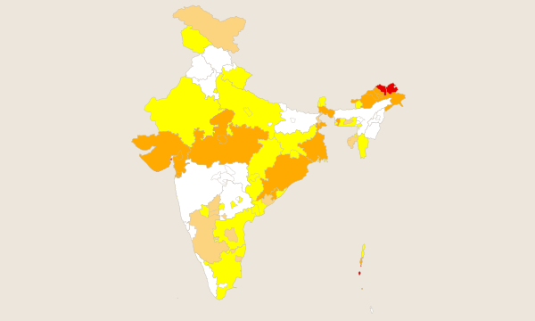
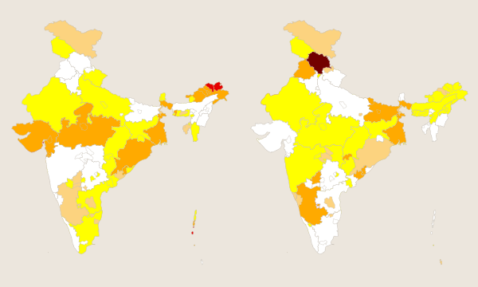
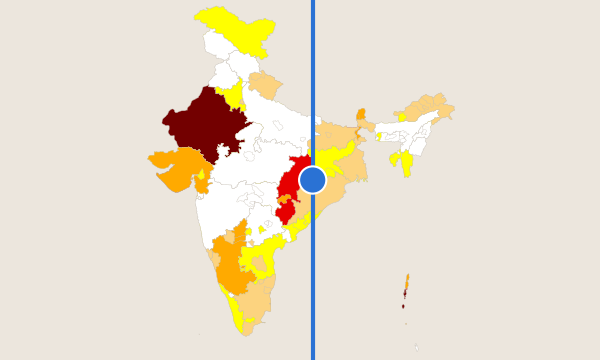
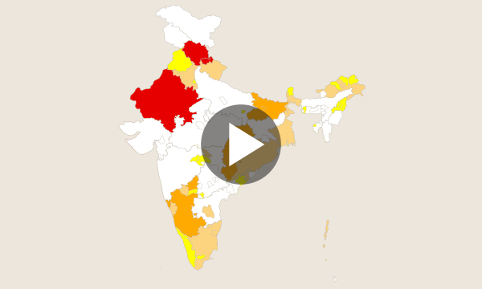
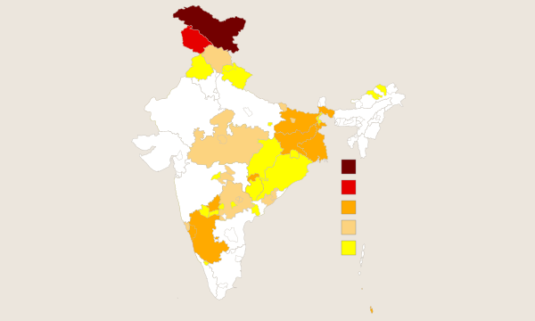
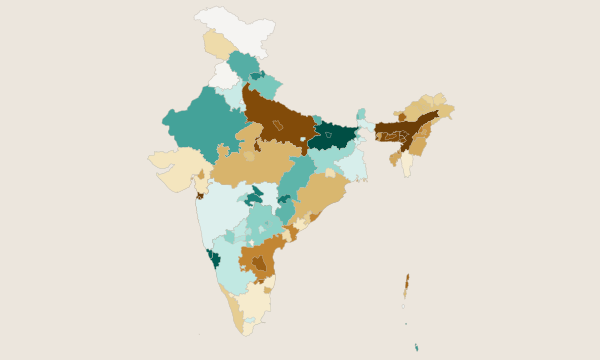

Maps

Current Map
The live interactive Combined Drought Index for the latest week. Hover, zoom, and jump to any state.
Open Current Map →
Compare Two Weeks
Two live maps side by side. Pick any two weeks to see how drought conditions changed.
Open Compare Two Weeks →
Comparison Slider
Drag a handle to wipe between an older week and a newer one, both rendered live.
Open Comparison Slider →
Animations
Play the weekly CDI record back through time at your chosen frame rate.
Open Animations →
Map Archive
Render any week from July 2021 to the present, then zoom and inspect.
Open Map Archive →
Hydrometeorological Conditions
Rainfall (SPI), runoff (SRI) and soil-moisture (SSMI) conditions at multiple accumulation periods.
Open Hydrometeorological Conditions →